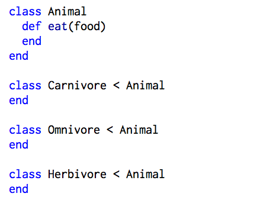
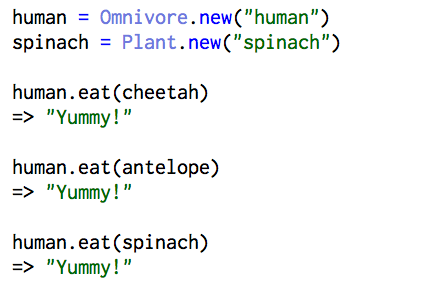

I am really trying to understand classes beyond the syntax and general properties. I want to give purpose and meaning to classes, their super-class, and their sub-classes! So let me give it a go:
I love cheetahs. They're the most beautiful animal, both fierce and elegant. But I feel a little sad when they eat antelope, another beautifully graceful animal. What do cheetahs and antelope have in common? Well...they're both animals that eat something. So I'll make an Animal class that allows me to call the method #eat(food) to find out if my animal will eat that food.

Hm. Thinking back to my cheetah and antelope, cheetahs eat antelope but antelope do not eat cheetahs. So I'm going to make subclasses for all of the different type of eaters animals can be. Which means I should rep all the veggie-lovers out there.
Since carnivores, omnivores, and herbivores are all just types of animals, they should have the same properties as animals. So notice that the Carnivore, Omnivore, and Herbivore classes are defined to inherit all of the functions of their parent Animal class.
Now let's write a #can_eat? method that describes what each of these subclasses can eat! Carnivores eat all animals. Omnivores eat both animals...and plants! Herbivores eat all plants. Wait, what are plants? No problem. We'll also make a new Plant class.

We had to define #can_eat? for each of our subclasses because, well, carnivores, omnivores, and herbivores don't eat the same things. They each need their own conditions. However, carnivores, omnivores, and herbivores all eat some kind of food, right? So now we will call each of the subclasses' #can_eat? methods in the Animal superclass.
Let's take a moment here to play around in irb. With the code we have so far, we can find out whether cheetah eats antelope. And...whether antelope eats cheetah?!
I am an omnivore. Would I eat cheetah or antelope? How about spinach?
What we've done is created instances of the Carnivore class (cheetah), the Omnivore class (human), Herbivore class (antelope), and the Plant class (spinach). We call the #eat method on our cheetah and antelope objects, even though it was defined in the Animal class. Why? Because the Carnivore and Herbivore subclasses inherited all functions of the Animal class! This is also true of the human object, which is an instance of the Omnivore class, which is a subclass of Animal. It's no surprise that the human thinks everything is yummy then since omnivores eat both meat and veggies!
This is a good demonstration of how to build a class, a subclass, and the relationship between those two things. If that is all you need, then feel free to stop here. It is a good introduction to Class structure and inheritance. But maybe you want to play around a little more with me...
What if I want to have multiple instances of the same subclass. Let's say I want to have two humans, two cheetahs, and two antelope. I can create names. And since I want to name plants, carnivores, omnivores, and herbivores alike, I can create a superclass called Organism using "attr_accessor", which allows us to read and write each name as we please. We can also require the name when we initialize.

And in order for our Animal and Plant classes to fall under the Organism superclass and inherit this function, we have to explicitly state that, like this:
Back to irb! We can see that we have to input a name every time we instantiate an object under the Organism superclass.
Yay! And we can use the ability to read the name (since we used "attr_accessor") whenever we want. So let's do that by fancifying our messages when we call the #eat method.
Okay, okay. The very last thing I want to do is account for a couple of edge cases. What if human wants to eat another human?! Or worse...what if human wants to eat itself... Let's take that into account in our #eat method in the Animal class. To be clear, my name is Lynne and my friend is named Courtland.
And there we have it! A little exhaustive but I hope this was a good demonstration of what Classes are, when to use them, and how to use them! And remember, don't eat your friends!